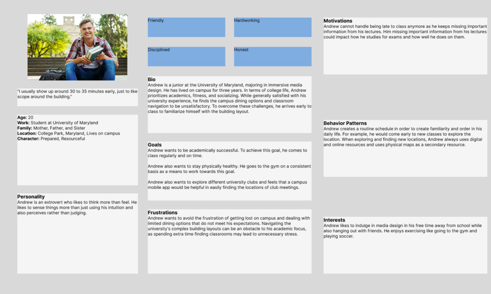
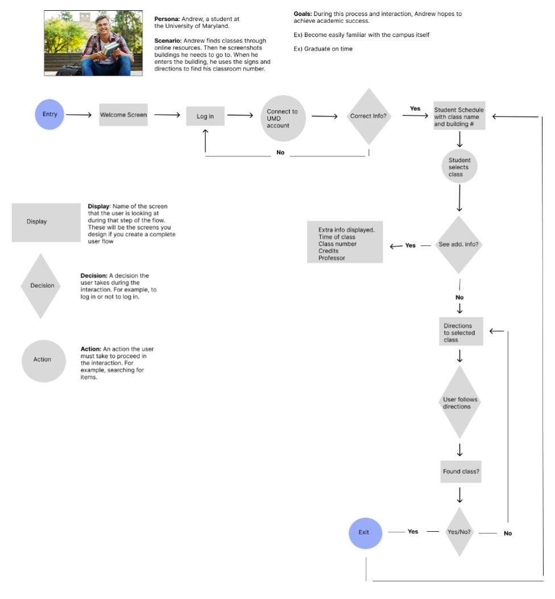
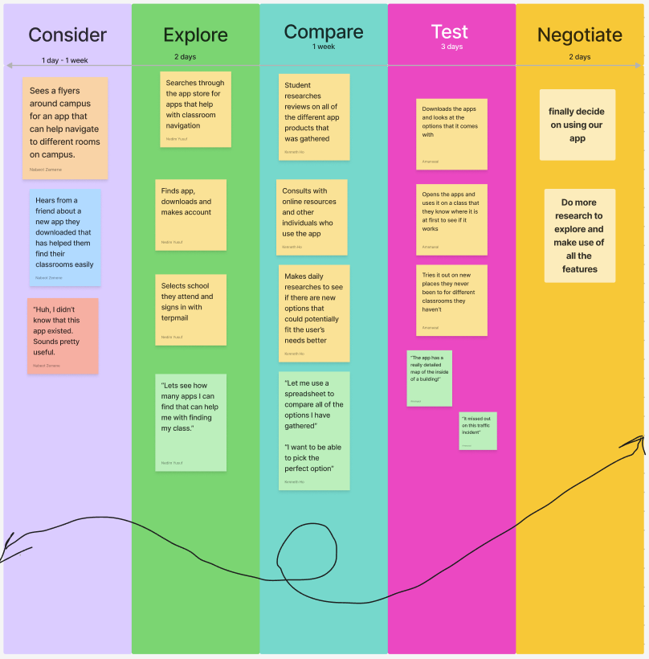
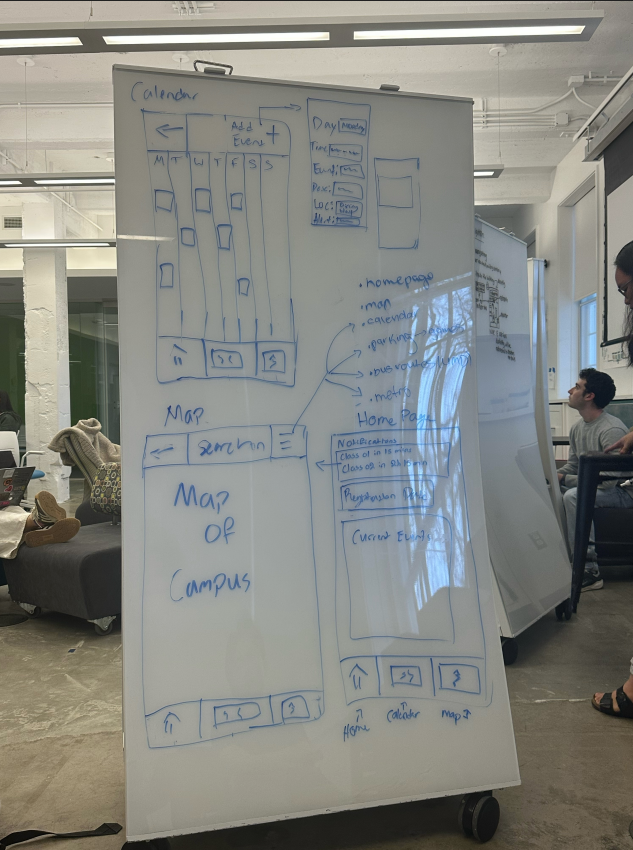
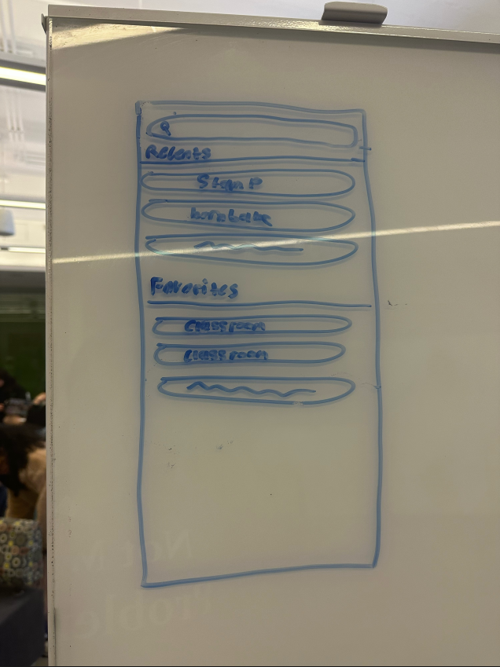
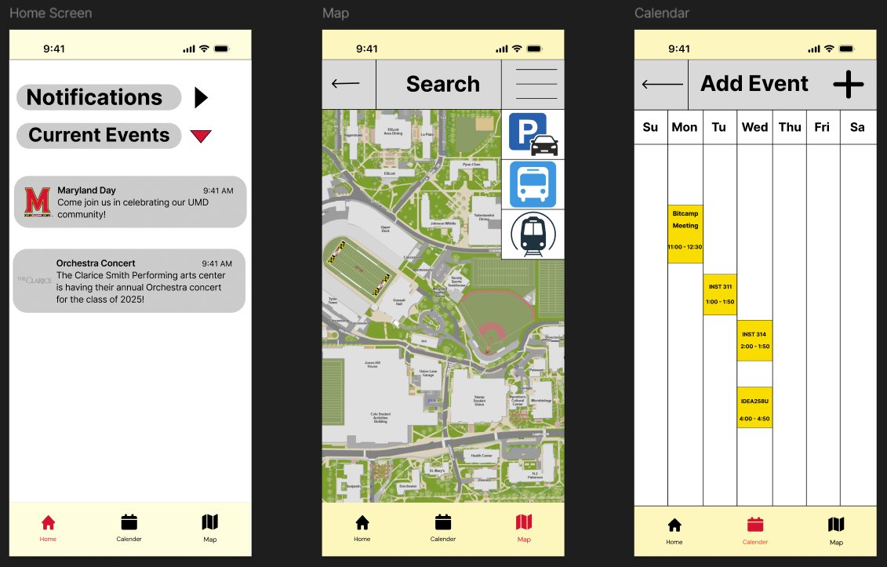
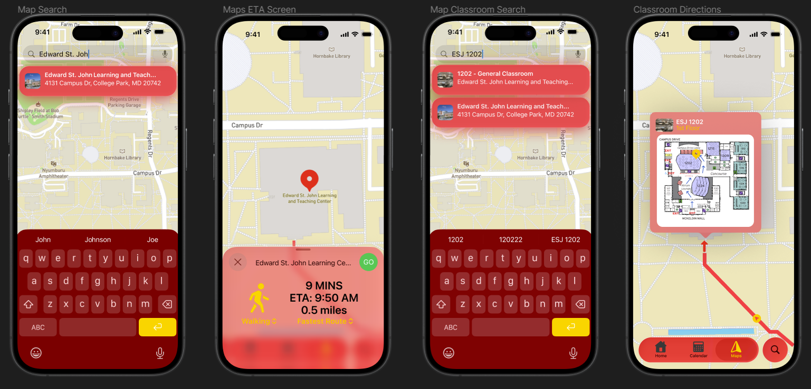

Background
Our project aims to help UMD students easily locate classrooms inside campus buildings by creating a navigation app that includes detailed interior building layouts — something most existing tools don't offer. Since many students struggle to find rooms and arrive on time, our target users are UMD students who need a reliable, intuitive tool to guide them between locations.
We evaluated success by testing whether students who previously had difficulty navigating campus improved their speed and punctuality when using the app.
Problem Statement
UMD has a large, widely spread-out campus with countless academic buildings, lecture halls, and hidden classroom wings that can be difficult to navigate — especially for newer students or those visiting a building for the first time. At the beginning of each semester, many students find themselves wandering through hallways, checking floor maps, or retracing their steps, leading to late arrivals and unnecessary stress.
How We Got There
To tackle the navigation challenges faced by UMD students, we began by conducting user research through interviews and surveys. We then created user personas and journey maps to better understand the typical student experience. Based on this research, we brainstormed features such as detailed indoor maps, step-by-step directions, and accessibility options. We developed wireframes and interactive prototypes in Figma, then ran usability testing sessions to gather feedback and refine the design iteratively.
User Personas

User Flows

Our research and persona development shaped the user flow by revealing challenges students face — such as relying on screenshots and unclear signage. To address this, we designed a simple digital navigation experience with quick access to class info and step-by-step directions.
User Journey Map

This journey map illustrates how UMD students discover, evaluate, and adopt a classroom navigation app across five key phases: Consider, Explore, Compare, Test, and Negotiate. It captures students' thoughts, motivations, and pain points at each stage — developed using real student feedback and research insights.
Proposed Solution
The proposed solution is a mobile and web-based application that helps UMD students quickly find their classrooms inside campus buildings. It features detailed interior maps, a simple user interface, and step-by-step directions to specific rooms based on the student's schedule.
Building on our understanding of the problem, we turned to research to validate our assumptions and better understand student needs.
- Despite a decade-old update aimed at improving campus navigation, UMD students still struggle to find classrooms — especially within complex building layouts. The outdated system doesn't provide internal maps.
- Junior Amisiyas Seyoum recently had trouble finding his INST 414 class in the Chemistry building.
- Ilias Souare found the Journalism building's unusual layout confusing on the first day of class.
Low-Fidelity Prototype


High-Fidelity Prototype — Draft

This represents the first iteration of our high-fidelity prototype, designed in Figma. Shown here are the three primary landing pages that form the core experience of the app. The insights gained from this version directly informed the next iteration, where I refined the layout, improved visual hierarchy, and created a cleaner, more cohesive interface overall.
Final High-Fidelity Prototype

After gathering feedback from usability testing, I made several key improvements: refining the layout for a cleaner interface, improving visual hierarchy through font sizes and spacing, and standardizing design elements like buttons and icons for consistency throughout the app.

These screens show the mapping and classroom navigation features. Students can search for a building or classroom directly within the map interface, view walking directions with estimated travel time, and access interior floor plans that highlight the exact room location within a building.
Outcome
Our final prototype successfully achieves our main goal — simplifying and enhancing the day-to-day experience of UMD students. Moving forward, we plan to conduct further usability testing to refine the prototype and begin development of a working beta version, with potential integration with existing campus systems.
- Efficient navigation
- Clear transportation options
- Personalized schedule integration
- Enhanced campus awareness